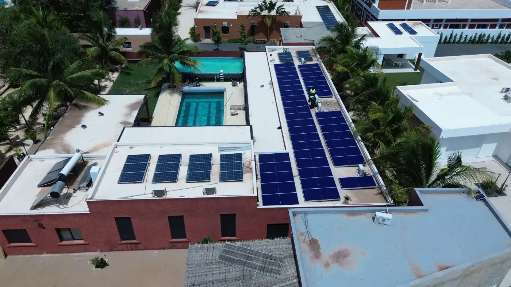

comparatif · rentabilité
Solaire ou groupe électrogène ? Le vrai comparatif sur 10 ans au Sénégal
Investissement, carburant, entretien, bruit, fiabilité. Le calcul complet qui donne tort au groupe électrogène dans 95 % des cas.

Pourquoi cette comparaison est cruciale au Sénégal
Au Sénégal, des milliers de villas, de PME et d'exploitations fonctionnent avec un groupe électrogène qui démarre à chaque coupure Senelec — plusieurs heures par jour parfois. La facture gasoil représente 30 à 60 % des charges énergétiques totales. Depuis 2022, le solaire hybride avec stockage lithium permet de remplacer complètement le groupe électrogène pour la plupart des usages. Le calcul sur 10 ans donne systématiquement l'avantage au solaire — même en incluant l'investissement initial.
Investissement initial
Pour alimenter une villa consommant 50 kWh/jour pendant les coupures :
- Groupe électrogène diesel 15 kVA avec coffret de bascule : 2,5 à 4 millions de FCFA
- Installation solaire hybride 11 kWc avec 30 kWh batteries (villa Mamelles DSG) : 10 à 13 millions de FCFA
Coût d'exploitation sur 10 ans
Groupe électrogène :
- Gasoil : 500 à 1 500 L/mois selon usage, soit 400 000 à 1 200 000 FCFA/mois au prix sénégalais (environ 800 FCFA/L)
- Vidanges et pièces : 300 000 à 500 000 FCFA/an
- Réparations majeures : alternateur, culasse, démarreur — comptez 1 à 2 millions FCFA sur 10 ans
- Facture Senelec en complément : non diminuée (le groupe sert seulement en secours)
- Électricité : gratuite (le soleil, 15-20 ans de production)
- Entretien : 100 000 à 200 000 FCFA/an (contrat DSG)
- Remplacement onduleur à l'année 8-10 : 1 à 2 millions FCFA
- Facture Senelec résiduelle : divisée par 5 à 10
Le calcul net : 60 à 160 millions FCFA économisés
Sur une période de 10 ans, remplacer un groupe électrogène par une installation solaire hybride économise 60 à 160 millions de FCFA à l'échelle d'une villa haut de gamme ou d'une petite entreprise. Pour une industrie qui tourne au gasoil 24/7, les économies annuelles peuvent dépasser 100 millions FCFA — c'est ce qui justifie le modèle d'injection directe de la centrale de 1 MWc de Sandiara posée par DSG.
Au-delà du coût : bruit, pollution, fiabilité
Le groupe électrogène a d'autres coûts cachés : bruit (90 dB à 7 mètres pour un 15 kVA — insupportable en zone résidentielle), fumées (particules fines, NOₓ, dioxyde de soufre), vibrations, risque incendie (stockage gasoil), temps de démarrage (5 à 30 secondes sans transfert automatique), dépendance au ravitaillement gasoil en zone rurale. Le solaire hybride est silencieux, propre, démarre instantanément (bascule <20 ms sur les onduleurs modernes) et ne dépend d'aucun approvisionnement.
Dans quels cas garder un groupe électrogène ?
Il reste quelques cas minoritaires :
- Site industriel >100 kW critique avec charge très inégale et longue autonomie exigée (24 h+) : le solaire reste pertinent en couverture principale, le groupe en secours ultime.
- Chantier mobile temporaire : le groupe reste plus pratique pour des durées courtes et des déplacements fréquents.
- Petits besoins ponctuels (fête, mariage, événement) : location de groupe reste plus simple qu'une installation dédiée.
Faire la transition : par où commencer
Chez DSG, nous accompagnons régulièrement cette transition. La démarche : audit énergétique du site (1 heure sur place, gratuit), dimensionnement adapté à la consommation réelle, installation parallèle (le groupe reste branché pendant les premiers mois comme assurance), puis démontage définitif du groupe après 6 mois de confiance. Demandez votre audit.
Questions fréquentes
- Est-ce que le solaire remplace vraiment le groupe électrogène ?
- Oui, dans 95 % des cas. Une installation solaire hybride avec stockage lithium alimente un site même pendant les coupures Senelec, sans bruit ni gasoil. Les 5 % de cas restants concernent des sites industriels très critiques avec longue autonomie exigée (24 h+).
- Combien économise-t-on en remplaçant son groupe par du solaire au Sénégal ?
- Sur 10 ans, l'économie se situe entre 60 et 160 millions de FCFA pour une villa haut de gamme ou une petite entreprise, investissement solaire inclus. Pour une industrie qui tourne au gasoil 24/7, les économies annuelles peuvent dépasser 100 M FCFA.
- Le solaire est-il aussi fiable qu'un groupe électrogène ?
- Il est plus fiable. Un onduleur hybride bascule du réseau à la batterie en moins de 20 millisecondes, imperceptible pour vos équipements. Un groupe met 5 à 30 secondes à démarrer et peut tomber en panne en pleine coupure si la batterie de démarrage est faible.
- Faut-il garder son groupe électrogène en complément ?
- Non dans la plupart des cas. Pour un usage résidentiel ou PME, le solaire hybride suffit. Pour un site industriel critique, on peut garder le groupe en secours ultime, mais l'utilisation descend à quelques heures par an.
Besoin d'une étude ?
Parlons de votre projet.
Étude gratuite sous 72 heures, devis détaillé poste par poste, visite sur site par nos équipes.